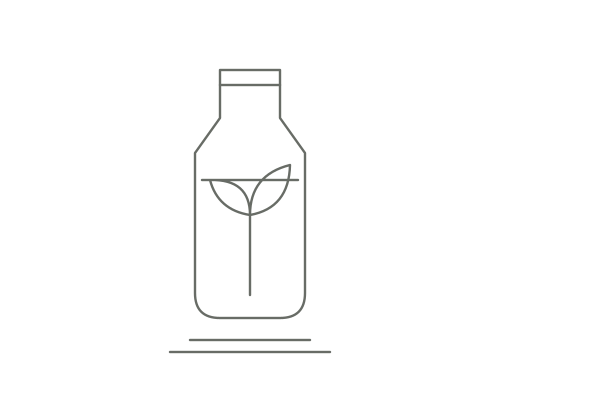
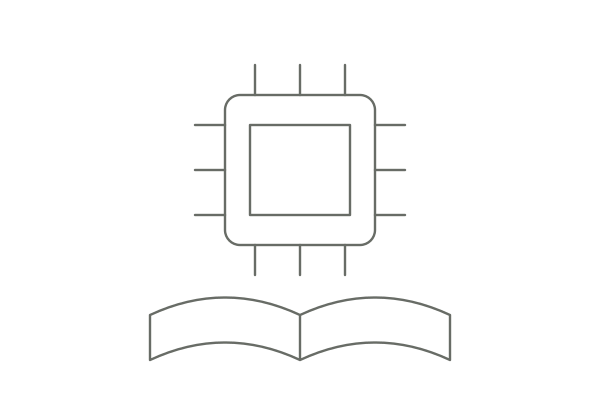

리뷰 요약
SF의 설정보다 공동체와 통제, 인간의 다름을 묻는 철학적 질문에 주목했다. 공평과 공정에 회의적이면서도 더 나은 사회를 향한 작은 노력은 지지한다는 생각을 되짚었다. 완벽하게 계획된 세계에서도 버나드와 헬름홀츠처럼 다름으로 고통받는 존재가 있다는 점에서 이 사회를 실패한 유토피아로 바라본다. 부모라는 말을 혐오하는 이유, 존이 셰익스피어가 아닌 다른 책을 읽었다면 삶이 달라졌을 가능성도 모임에서 나누고 싶어 했다.
『멋진 신세계』에서 오늘의 AI까지.
행복과 통제, 인간다움을 묻는 다섯 멤버의 11월.

SF의 설정보다 공동체와 통제, 인간의 다름을 묻는 철학적 질문에 주목했다. 공평과 공정에 회의적이면서도 더 나은 사회를 향한 작은 노력은 지지한다는 생각을 되짚었다. 완벽하게 계획된 세계에서도 버나드와 헬름홀츠처럼 다름으로 고통받는 존재가 있다는 점에서 이 사회를 실패한 유토피아로 바라본다. 부모라는 말을 혐오하는 이유, 존이 셰익스피어가 아닌 다른 책을 읽었다면 삶이 달라졌을 가능성도 모임에서 나누고 싶어 했다.
중국 톈진 답사에서 떠올린 건설·제조업 중심의 성장, 부동산 개발, 자원 집중과 정치 체제를 『멋진 신세계』와 연결한다. 책을 읽으며 여러 영화와 중국이 꿈꾸는 미래를 떠올렸고, 서문의 유토피아를 AI로 바꾸어 읽는 관점을 제시했다. 오래전에 쓰인 소설이 오늘의 기술과 사회를 돌아보게 한다는 점에 감탄했다.

시험에서의 AI 활용 논란을 계기로, 답을 얻는 것과 공부할 역량을 갖추는 것은 어떻게 다른지 묻는다. 산업혁명 이후를 그린 소설을 AI 혁명 이후의 미래에 겹쳐 읽으며, AI가 생각과 노동을 대신할 때 인간을 구분하는 기준과 재화의 배분 방식이 무엇이 될지 고민했다. 오늘의 사회가 소설 속 세계로 향하는 것은 아닌지 우려를 남겼다.
별도로 등록된 리뷰가 없습니다. 아래 토픽에 남긴 생각을 함께 읽어 주세요.
삶의 목적처럼 붙들어 온 행복을, 의심 없이 받아들이도록 훈련된 행복과 비교하며 다시 생각했다. 더 많이 알고 회의하는 태도가 철학을 낳지만 개인의 안정과는 충돌할 수 있다는 점, 모두가 알파인 사회가 실패한다는 설정에 주목했다. 앎과 행복의 관계를 에덴동산 이야기에 연결하고, 불행해질 권리까지 요구하는 인간의 자의식과 자기 삶을 선택하려는 욕구를 돌아보았다.